[ND] PCL Historicals and WS2
Issue number 522
jesseandersonumd opened this issue on June 25, 2020 at 6:19 am
Labels PCL/SVP Historicals
Deaths include several different data points, such as “deaths due to COVID-19”, “deaths where COVID-19 is not the primary cause”, and “pending death records”. We should consider “deaths due to COVID-19” as confirmed, and add the remaining values - “pending death records”, “deaths where COVID-19 is not the primary cause” and “deaths of individuals presumed positive” to obtain probables. In WS2, we’re reporting the total - number of individuals who tested positive and died from any cause while infected with COVID-19 - as our confirmed value. We should only be reporting “deaths due to covid-19” as our confirmed.
ND started separating confirmed and probable deaths on 5/3. All the values from 5/3 until 5/31 need to be filled in from screenshots.
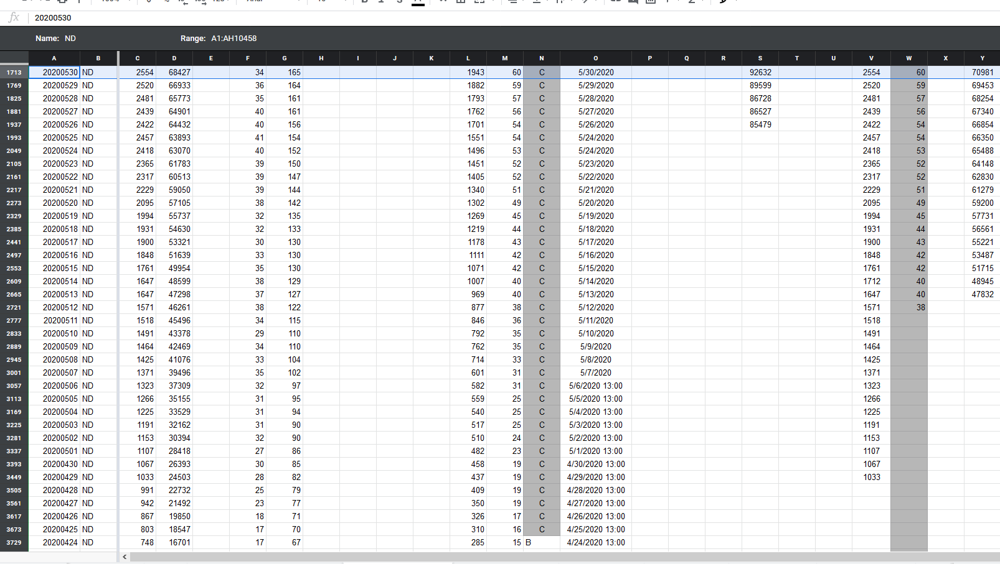
New decision for how to track COVID-19 deaths in ND Confirmed = due to COVID-19 Probable = presumed positive Lumped = due to COVID-19 + presumed positive
Edited tooltips and worksheet 2 values so that pattern will be followed during today’s DE shift Probable 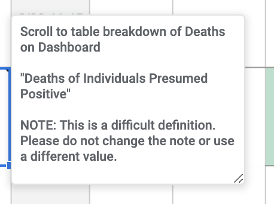 Confirmed 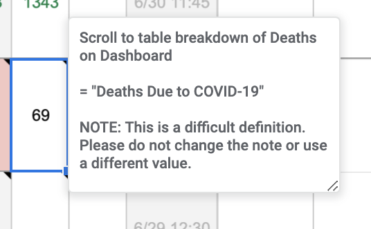 Lumped 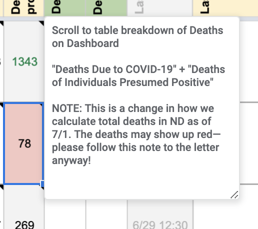
From 5/3 to 5/26, ND provided 3 categories in its table: “Deaths due to COVID-19”, “not the primary cause”, and “pending death records”. It did not provide probables.
{kind=link}
{kind=link}
Changing “totals” to equal “Confirmed” to equal “Deaths Due to COVID-19”, and zeroing out probables.
Before (with @muamichali’s prior edits in line with our old ND definitions): 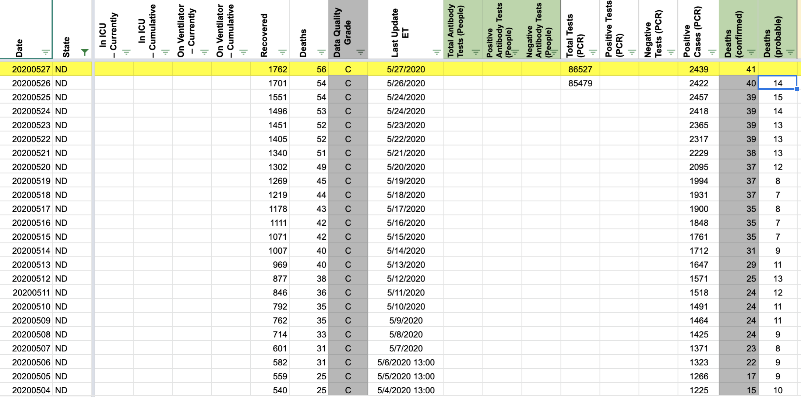 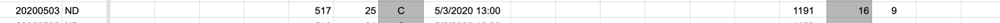
After 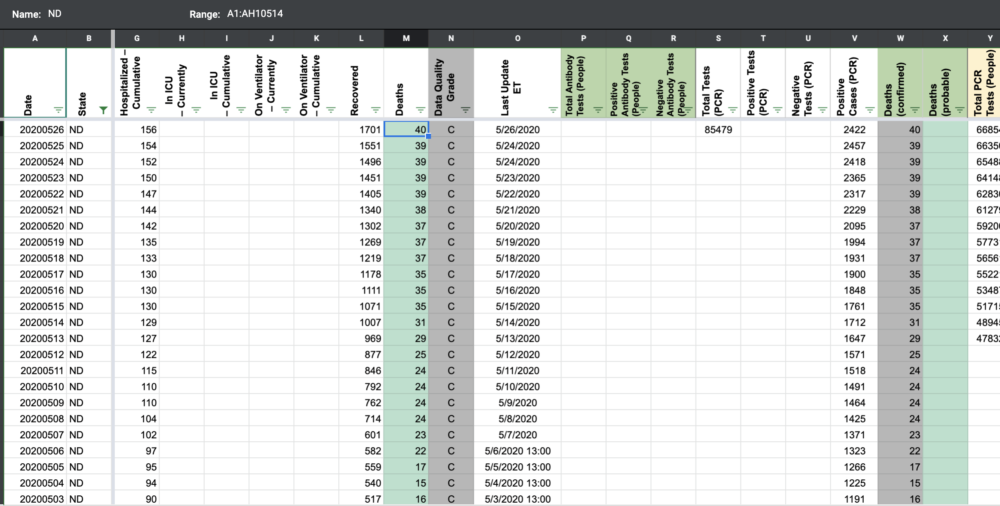
As a result of the revision for 5/3-5/27, it will appear as if deaths drop on 5/3 from 24 to 16, as we are excluding the pending + non-primary cause confirmed cases from our “Confirmed” and “Total” column. For 5/2 and prior, we have no way of excluding those numbers, because ND doesn’t provide the breakdown. 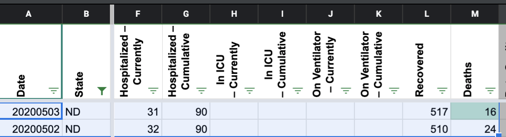
Adding a public note to explain this: “On 5/3, ND began providing counts of deaths for lab-confirmed individuals with death records still pending, and lab-confirmed individuals who died but not due to COVID. As of 7/1, we have edited our figures to exclude these numbers from our death counts, resulting in an apparent drop from 24 deaths on 5/2 to 16 on 5/3.”
From 5/27 onward, changing values from screenshots so that: Confirmed = due to COVID-19 Probable = presumed positive Lumped = due to COVID-19 + presumed positive
{kind=link}
Before 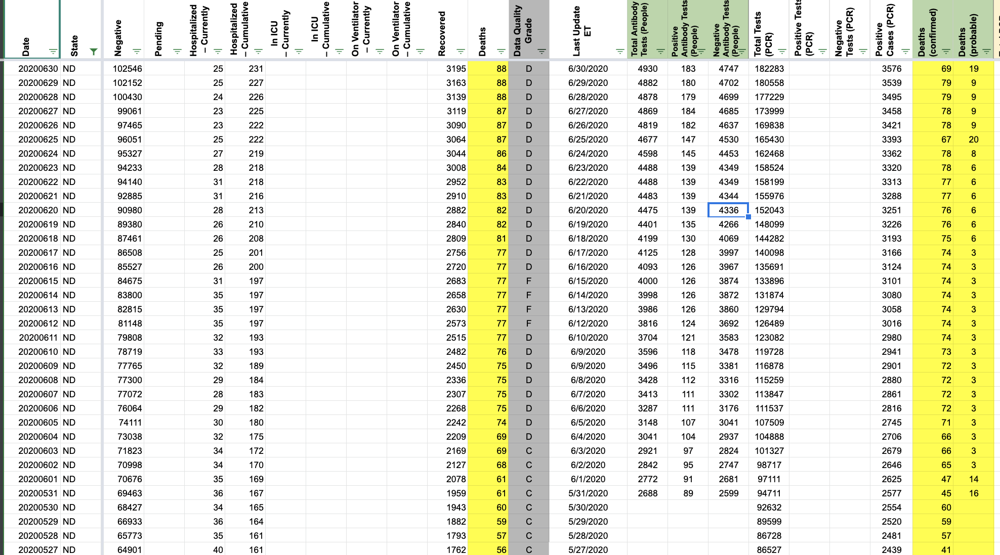 After: 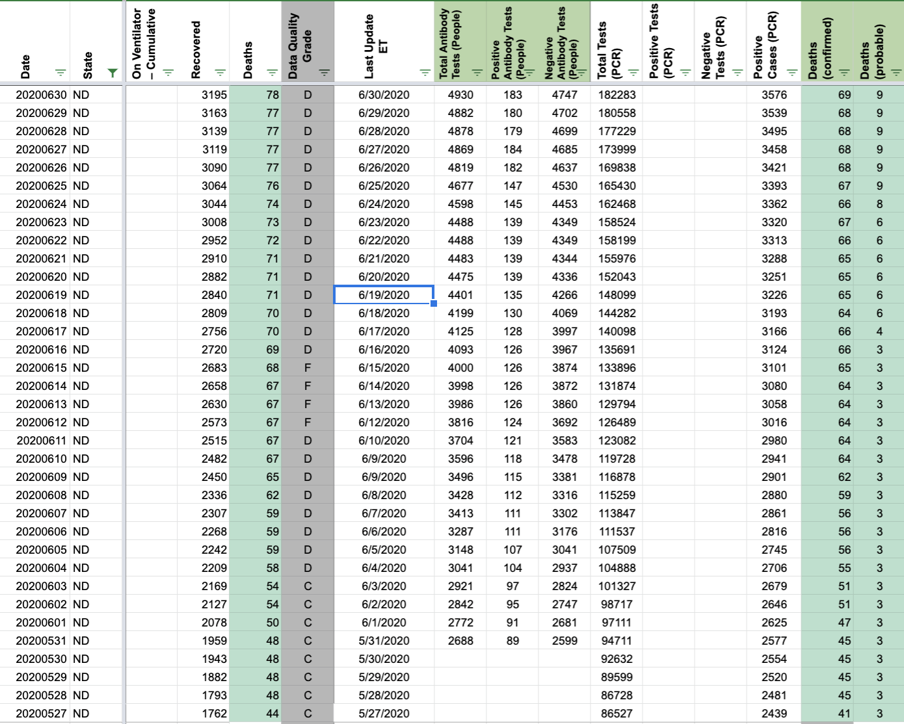
When we release confirmed/probable columns, we will need to make a public note: “On 6/18, ND revised down its confirmed death count from 66 to 64. On 6/24, ND revised its confirmed death count from 67 to 66 to remove an out-of-state case.” (source re out-of-state case: https://www.health.nd.gov/news/positive-covid-19-test-results-79) 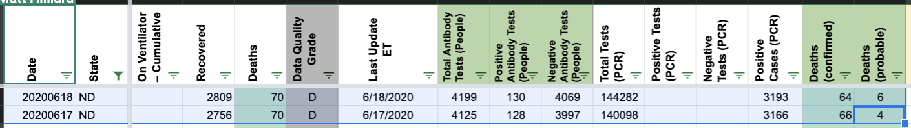 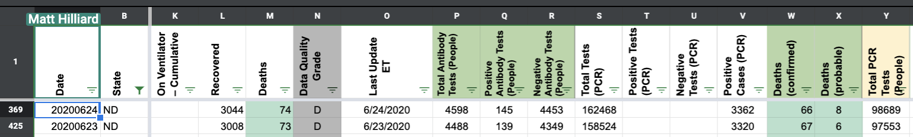
5/12 CTP Started reporting deaths and confirmed cases of deaths as the same value 5/31 CTP Started separating confirmed and probable deaths